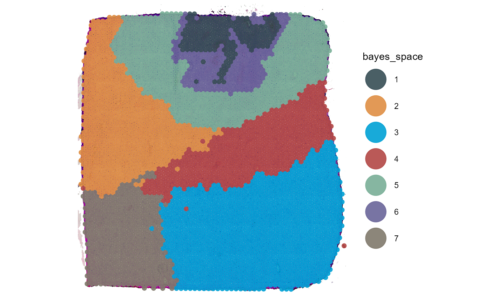
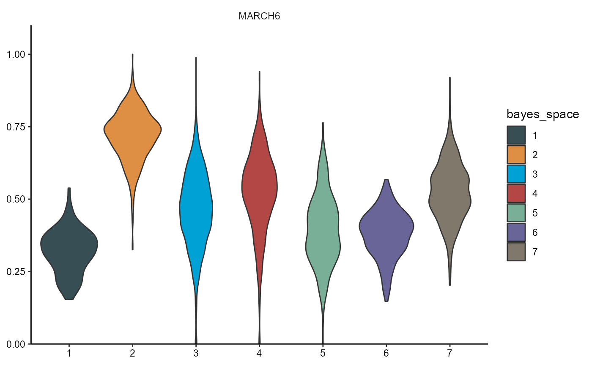

Miscellaneous plots
spata-v2-plotting-misc.Rmd2. Introduction
This vignette gives examples of a variety of different plotting options SPATA2 offers.
object_t275 <- downloadSpataObject("275_T")
data("clustering")
object_t275 <-
addFeatures(
object = object_t275,
feature_df = clustering$`275_T`,
overwrite = TRUE
)
object_t275 <- setDefault(object_t275, pt_clrp = "jama")
plotSurface(object_t275, color_by = "bayes_space")
3. Dimensional reduction
Dimensional reduction in form of PCA, TSNE and UMAP can be plotted
with the respective functions plotPca(),
plotTSNE() and plotUmap().
plotPca(
object = object_t275,
n_pcs = 10,
color_by = "bayes_space",
pt_size = 1
)
plotTsne(object_t275, color_by = "bayes_space", pt_size = 1)
plotUmap(object_t275, color_by = "bayes_space", pt_size = 1)To plot multiple dimensional reduction plots with different variables
color_by can be of length bigger than 1 as long as all
variables are numeric.
4. Statistics
Statistic related plots can be plotted via
plotBoxplot(), plotViolinplot(),
plotRidgeplot(), plotDensityplot() and
plotHistogram(). The first two allow for statistical
tests.
object_t275 <- setDefault(object_t275, clrp = "Set3")
plotRidgeplot(
object = object_t275,
variables = dea_genes
)Use argument across if you want to do display value
distribution across groups and perform statistical tests.
# show results
dea_genes
## 1 2 3 4 5 6 7
## "GPRC5A" "MARCH6" "VOPP1" "ID3" "CST3" "VEGFA" "SNAP25"
# plot results
plotViolinplot(
object = object_t275,
across = "bayes_space",
variables = dea_genes[2],
clrp = "jama"
)
Statistical tests can be added to the plot via the arguments
test_groupwise and test_pairwise.
plotBoxplot(
object = object_t275,
variables = dea_genes[4],
across = "bayes_space",
test_pairwise = "t.test",
step_increase = 0.25,
ref_group = "4",
clrp = "jama"
)5. Scatterplots
plotScatterplot() includes multiple options to plot two
numeric variables against each other.
plotScatterplot(
object = object_t275,
variables = c("GAPDH", "GFAP"),
smooth = TRUE,
smooth_method = "lm"
)